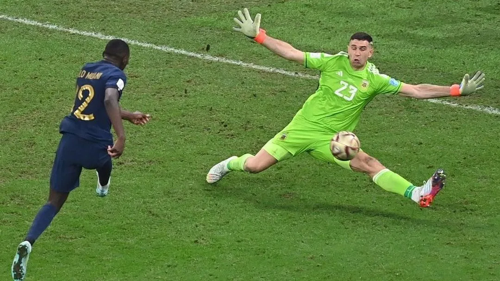

Dibu Martínez detona atuação da Argentina contra Mauritânia: "Mais coração do que futebol"

Em entrevista após o amistoso, o goleiro campeão do mundo não poupou críticas à postura da Albiceleste e cobrou evolução técnica antes do início das eliminatórias.
Após a Argentina vencer a Mauritânia por 2 a 1, nesta sexta-feira, em amistoso realizado na Bombonera, em Buenos Aires, o goleiro Dibu Martínez fez duras críticas à atuação da equipe. "Foi um dos piores jogos, ainda que seja amistoso. Faltou intensidade, jogo e velocidade. É algo que temos que analisar que quando colocamos a camisa da seleção precisamos fazer muito melhor. Cabe a mim aparecer quando preciso, e eles chegaram muito. Ganhamos, mas conhecíamos pouco o rival e eles deram a vida. É preciso ter um pouco mais de coração", disse o goleiro após a vitória.